Clustering
Overview
Clustering is a way of finding groups in data without being told what the groups are. The method looks at how similar items are to each other and puts similar items together. No labels are given, so the groups come from the data alone. This makes clustering a tool for discovery. It can show patterns that nobody set out to look for.
There are two main kinds of clustering. Partitional clustering splits the data into a fixed number of groups, called k, which is chosen in advance. This project uses k-means. It places k centre points, assigns every item to its nearest centre, and then moves each centre to the middle of its group. It repeats this until the centres stop moving. Hierarchical clustering does not need k at the start. It begins with every item in a group of its own and keeps joining the two closest groups until only one group is left. The result is a tree, called a dendrogram, that can be cut at any height to give a set of groups.
Both methods need a way to measure how far apart two items are. Here the items are job postings, turned into word weights. The hierarchical clustering uses cosine similarity. It compares which words two postings use and how strongly, no matter how long each posting is. Groups are joined with complete linkage, which means two groups only count as close if even their least similar postings are close. K-means uses ordinary straight-line distance, called Euclidean distance. Every posting is scaled to the same size first, so this ranks pairs of postings in the same order as cosine similarity does.
In this project, clustering is run on 3,718 job postings from AI companies. The goal is to see which groups of jobs appear when the method reads only the job descriptions. Each posting already has a role family, such as software engineering, sales or forward deployed engineering, which was taken from its job title. That label is kept aside during clustering. It is only brought back afterwards, to check whether the groups the method found match the job types or something else.
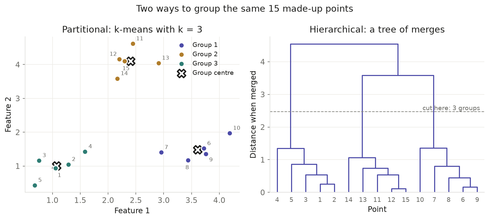
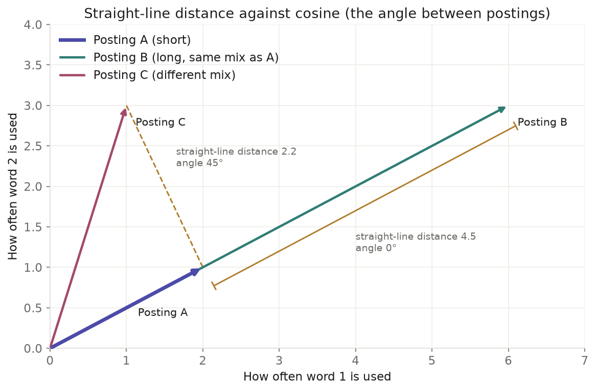
Data Preparation
Clustering works by measuring distances, and distances can only be measured between numbers. So the input has to be a table of numbers, with one row for each posting and one column for each feature. It also has to be unlabeled. If the role family were part of the input, the method would simply sort postings by the answer instead of finding groups on its own. For this reason the role family was removed before clustering and only used later to check the results.
The data started with 4,294 postings. Of these, 933 belonged to 357 groups of near copies, where a company posted the same job, with the same title and the same opening text, more than once. Only the first copy of each job was kept, and the other 576 copies were removed, so that repeated text could not form fake groups. That left 3,718 postings. Each description was then turned into numbers with a method called TF-IDF. Every posting becomes a row and every word becomes a column. A word gets a high weight in a posting when it is used often in that posting but is rare across all postings. Common English words such as “the” and “and” were dropped. So were words that appear in fewer than 5 postings or in more than 80% of them. This left about 7,800 word columns.
A first test showed a problem. Each company repeats the same blocks of text in all of its postings, such as its mission statement, its benefits and its legal notices. These blocks were so strong that the clusters grouped postings by company rather than by job. So a second version of the data was made. Any sentence that appears in at least 10% of one company’s postings, and in at least 3 of them, was removed, and so were company names. This cut the typical description roughly in half, from about 6,300 to about 3,300 characters, and left 7,495 word columns. Both versions were clustered, and both are shown in the results below.
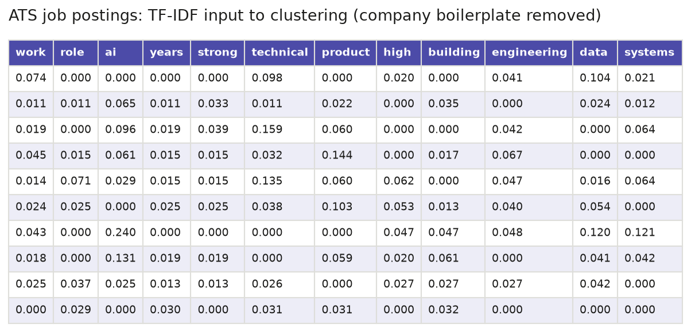
Ten postings and twelve of the 7,495 word columns from the version with company text removed. Each number is a TF-IDF weight. Many cells are zero, because each posting uses only a small share of all the words. There is no label column, only numbers.
Data files
- Raw data: job postings collected from company job boards with the Apify multi-ATS job scraper, using fetch_apify.py. The full raw files are about 64 MB and are not stored in the repository, so a 20-row raw sample is linked instead.
- Clean data: ats_final.csv, the 4,294 cleaned postings this page starts from, before near copies are removed.
- Clustering input sample: clustering_input_sample.csv, shown in the table above.
Code
| File | What it does | Language | Main packages |
|---|---|---|---|
| text_clusters.py | Builds the TF-IDF matrix, removes text that a company repeats in every posting, runs k-means and hierarchical clustering, and runs truncated SVD. | Python 3.12 | scikit-learn, scipy, pandas, numpy |
| k-means in text_clusters.py | Runs k-means for every k from 2 to 15 with five random starts, scores each k by inertia, silhouette and stability, and fits the final model (kmeans_sweep, fit_kmeans). |
Python 3.12 | scikit-learn |
| Hierarchical clustering in text_clusters.py | Computes cosine distances, builds the complete-linkage tree, cuts it into k clusters, and scores every cut (cosine_distances, cosine_linkage, cut_k, hier_k_scan). |
Python 3.12 | scipy, scikit-learn |
| cluster_plots.py | Draws the clustering and SVD charts: the choice of k, silhouette diagrams, heatmaps, dendrograms, explained variance and projections. | Python 3.12 | matplotlib, seaborn, scipy, scikit-learn |
| 02_clustering_pca.ipynb | Runs the clustering and PCA steps from start to end and saves every figure, the cluster labels and a results report. | Python 3.12 (Jupyter) | pandas, scikit-learn, scipy, matplotlib |
| make_clustering_concept_figures.py | Draws the two explanatory figures in the Overview from small made-up data. | Python 3.12 | matplotlib, scipy, scikit-learn |
| make_module2_samples.py | Saves the small samples of the clustering and PCA input shown on these pages, and draws them as table images. | Python 3.12 | pandas, numpy, matplotlib |
Results
Clustering was run on two versions of the TF-IDF table: the raw descriptions, and the version with company boilerplate removed. For each version, k-means was fitted for every k from 2 to 15 with five random starts, and a complete-linkage tree was built on cosine distance. The numbers below refer to the figures further down the page.
Which values of k were compared
The silhouette score, inertia and stability across random starts were measured for every k from 2 to 15. Four values, k = 3, 4, 8 and 14, were then fitted and compared side by side, with their cluster sizes and silhouette plots (figures 2 and 6). These four include the k finally chosen for each version: k = 14 for the raw descriptions and k = 4 once boilerplate was removed.
What the silhouette score says about the best k
On the raw descriptions, the average silhouette score rises with k and is highest at k = 14 and k = 15, which tie at 0.173 (figure 1). Of every k close to that top, k = 14 also gives the most repeatable clusters across random starts, so it was chosen. Among the four values compared, the silhouette rises from 0.077 at k = 3 to 0.185 at k = 14.
Once company boilerplate is removed, the silhouette score is below 0.03 at every k (figure 5). It is highest at k = 15, the top of the range tested, so it does not point to a clear best k. Here k = 4 was chosen instead, as the largest k whose clusters stay the same across random starts. The low scores mean the groups overlap heavily: between 24% and 37% of postings sit closer to another cluster than to their own (figure 6).
Silhouette plots
Figures 2, 3, 6 and 7 show the silhouette value of every posting, grouped by cluster. On the raw descriptions (figure 3), only one cluster, a mix of smaller companies, has any postings with negative values. With boilerplate removed (figure 7), the sales and customer-facing technical clusters hold together, while the engineering cluster and the legal and finance cluster have many negative values.
How hierarchical clustering compares with k-means
On the raw descriptions the two methods agree fairly well, with an adjusted Rand index of 0.70 (figure 11). Both group postings by company: the hierarchical clusters H6 and H9 sit entirely inside the OpenAI and Databricks k-means clusters. The tree keeps the original distances well, with a cophenetic correlation of 0.85.
With boilerplate removed, agreement drops to 0.21 (figure 14). The tree splits the postings into two large groups, engineering (1,809 postings) and everything else (1,892), plus two tiny groups of 11 and 6 postings. K-means goes further and also separates sales, customer-facing technical work and a legal and finance group. The tree’s cophenetic correlation is 0.54, so it only roughly reflects the distances between postings.
What k the hierarchical tree suggests
The gaps between merge heights in the tree are all very small, so the dendrogram on its own does not mark a clear place to cut. Scoring every possible cut with the silhouette score gives a clearer answer. On the raw descriptions the best cut is k = 14 (figure 9), the same k chosen for k-means. With boilerplate removed, the silhouette of the cuts is almost flat. It is highest at k = 7, with the same value at k = 4 (figure 12), which matches the k chosen for k-means, while the k-means silhouette itself keeps rising up to k = 15.

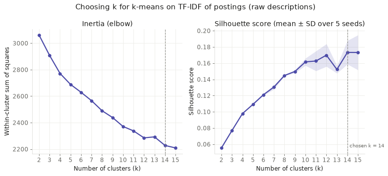
1. Choosing k for k-means (raw descriptions)
Inertia has no clear elbow. The silhouette score is highest at k = 14 and k = 15, which tie at 0.173, and of every k within the seed-to-seed spread of that top, k = 14 is also the most stable across random starts (0.901), so it was chosen. The dip at k = 13 is a poor fit rather than real structure, since inertia rises there (2,285 to 2,292).

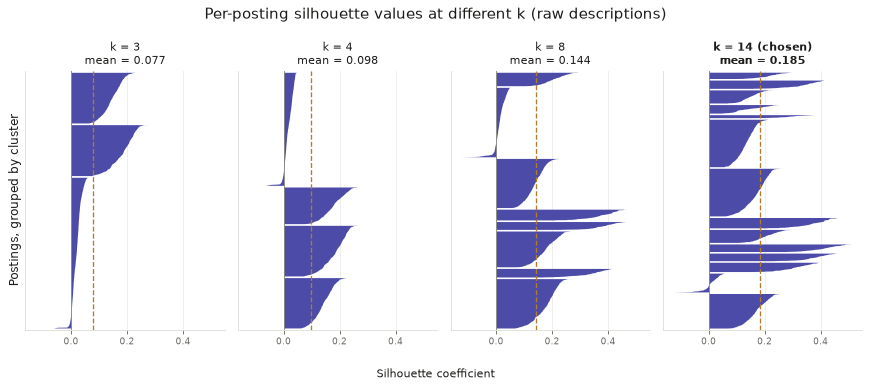
2. Silhouette values at k = 3, 4, 8 and 14 (raw descriptions)
The average silhouette rises from 0.077 at k = 3 to 0.185 at k = 14, and the share of postings with negative values falls to 2.9%, so k = 14 is the best of the four.

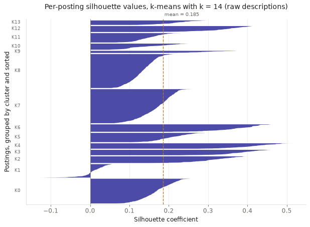
3. Silhouette values for the chosen k = 14 (raw descriptions)
Most postings fit their own cluster well: K1, a mix of smaller companies, is the only cluster with any negative values (36% of its postings, mean 0.01), while small single-company clusters such as Ramp (K4, 0.41) and Figma (K3, 0.38) score highest.

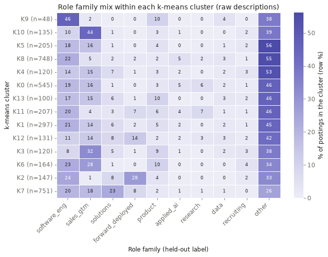
4. Role family mix of each k-means cluster (raw descriptions)
No cluster lines up with a role family: "other" is the largest group in 12 of the 14 clusters. Instead, the clusters follow employers, and 12 of them hold postings from a single company, because each company repeats the same boilerplate text in every posting.

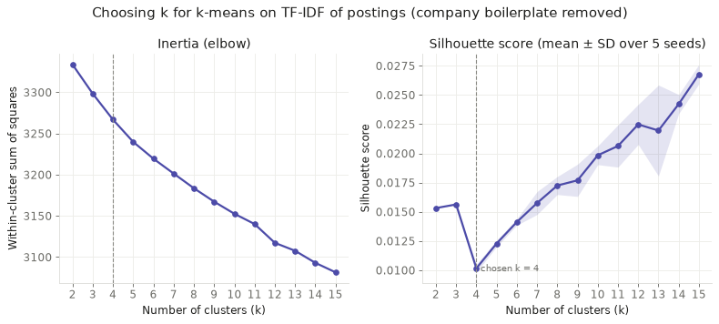
5. Choosing k for k-means (company boilerplate removed)
Silhouette is below 0.03 at every k, so it cannot pick a k; k = 4 was chosen as the largest k whose clusters stay the same across random starts (agreement 0.88, falling to 0.75 at k = 5).

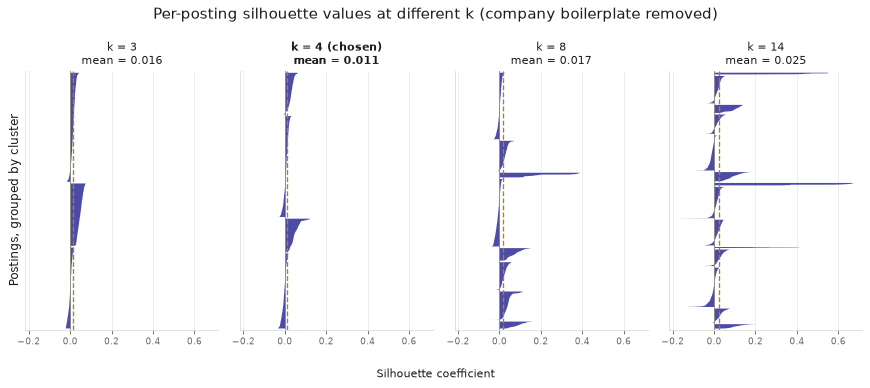
6. Silhouette values at k = 3, 4, 8 and 14 (company boilerplate removed)
Across the four k values compared, the average silhouette stays between 0.011 and 0.025, and 24% to 37% of postings have negative values, so none of them gives well-separated groups.

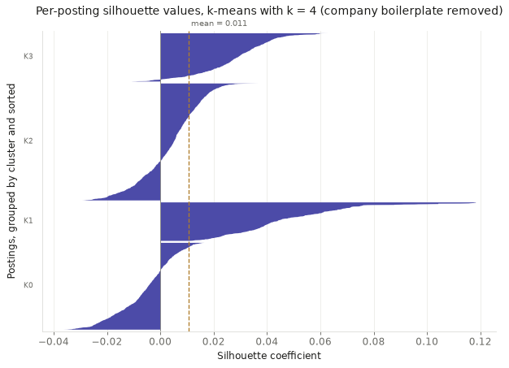
7. Silhouette values for the chosen k = 4 (company boilerplate removed)
The customer-technical (K1) and sales (K3) clusters hold together, while engineering (K2) and the legal and finance cluster (K0) are weak, with 34% and 69% of their postings negative.

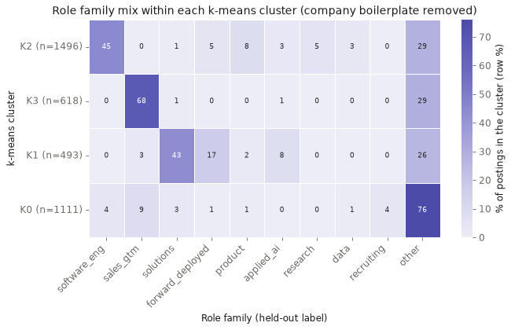
8. Role family mix of each k-means cluster (company boilerplate removed)
With boilerplate removed, the clusters follow job types: K3 is 68% sales, K2 is 45% software engineering, and K1 is mainly solutions (43%) and forward_deployed (17%) postings.

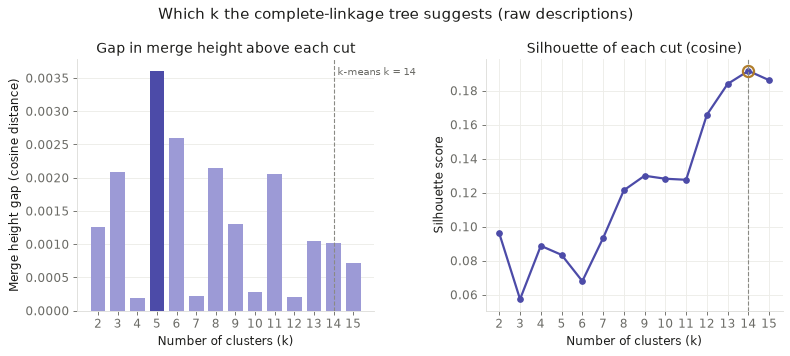
9. Which k the hierarchical tree suggests (raw descriptions)
The merge gaps are all tiny, so the dendrogram itself does not point to one k, but the cut silhouette is highest at k = 14 (0.192), the same k chosen for k-means.

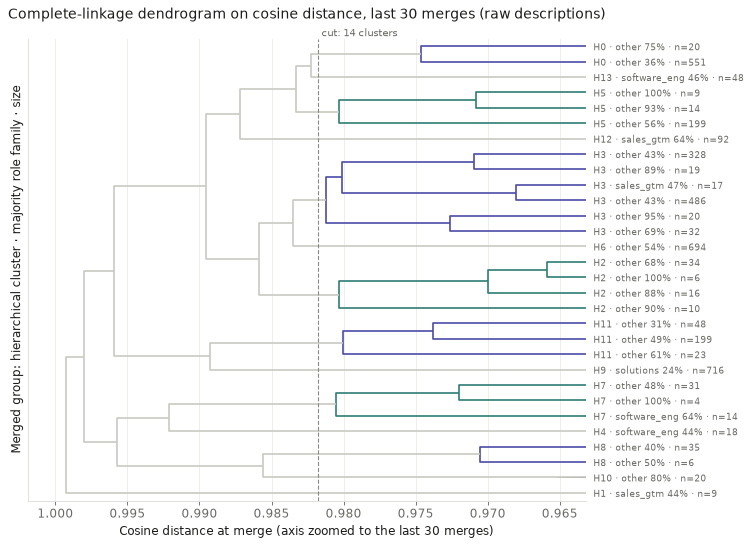
10. Hierarchical clustering dendrogram (raw descriptions)
The branches follow companies rather than jobs; for example, H9 is 716 Databricks postings and H6 is 694 OpenAI postings. The cophenetic correlation of 0.85 means the tree keeps the original distances well; average linkage scores higher (0.93) but was not used, because it puts 2,943 of the 3,718 postings into just two clusters.

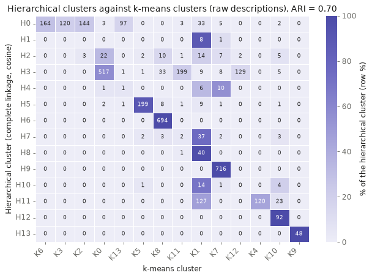
11. Hierarchical clusters against k-means clusters (raw descriptions)
The two methods agree fairly well (ARI = 0.70). Two large hierarchical clusters sit entirely inside one k-means cluster each: H6 (694 postings) inside the OpenAI cluster K8, and H9 (716) inside the Databricks cluster K7. Others are merged, with H3 combining Anthropic (517), Scale AI (199) and Cohere (134).

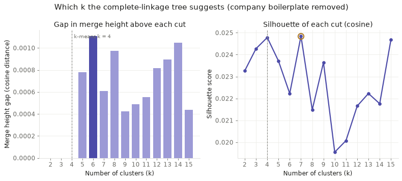
12. Which k the hierarchical tree suggests (company boilerplate removed)
The cut silhouette is almost flat, with its highest value at k = 7 and an equal value at k = 4 (both 0.025), which matches the k chosen for k-means; the k-means silhouette is instead highest at k = 15, the top of the range tested.

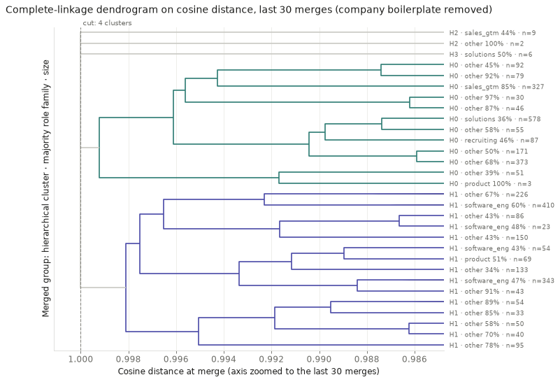
13. Hierarchical clustering dendrogram (company boilerplate removed)
The tree really splits postings into two groups: H1 (1,809 postings) is the engineering group, H0 (1,892) mixes sales, solutions and forward_deployed postings, and the other two clusters are tiny (11 and 6 postings).

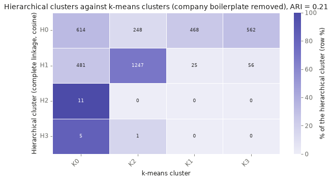
14. Hierarchical clusters against k-means clusters (company boilerplate removed)
Agreement is low (ARI = 0.21): hierarchical clustering mainly separates engineering (H1 holds 1,247 of 1,496 K2 postings) from everything else, while k-means also splits out sales, customer-technical and legal/finance groups.
Conclusions
The clearest lesson is that job postings at AI companies are written mostly in the company’s own voice. On the raw descriptions, 12 of the 14 clusters each hold postings from a single employer, and the clusters match the company far more closely than the type of job. Mission statements, benefits and legal notices are repeated in every posting and drown out the description of the work itself. Any study of hiring that reads posting text has to remove this boilerplate first, or it will measure employers instead of jobs.
Once the boilerplate is removed, the descriptions do sort into kinds of work: engineering, sales, customer-facing technical work, and a broad business group covering roles such as legal, finance and operations. These groups match the role families much better than before, but they still overlap a great deal. Silhouette scores stay below 0.03, and about a third of postings sit closer to another group than to their own. Jobs at these companies blend into each other more than their titles suggest.
This matters most for forward deployed engineers. Their descriptions do not form a group of their own. The customer-facing technical cluster holds 78% of solutions postings and 52% of forward deployed postings, while another 42% of forward deployed postings fall in the engineering cluster. In the words companies use, the role sits between solutions work and engineering, and closer to solutions than its “engineer” title suggests. Customer-facing technical work as a whole does stand out as a group of its own, with 493 of the 3,718 postings.
Finally, the two methods only agree fairly well on the raw text (an adjusted Rand index of 0.70), where the company signal is easy to find. On the cleaned text, the hierarchical tree mainly separates engineering from everything else, while k-means also splits out sales and customer-facing work. The split between engineering and non-engineering jobs is the one result that both methods support.